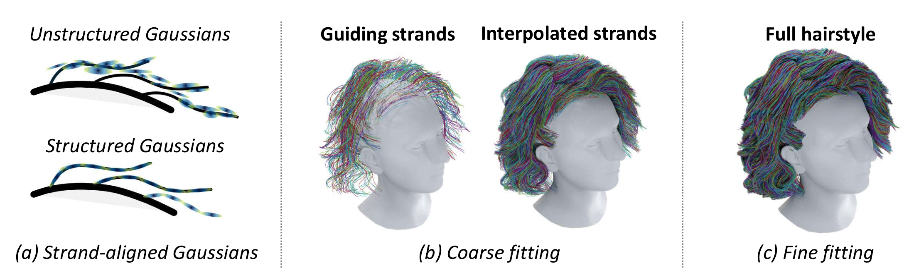

Main idea

Gaussian Haircut 使用多视角图像和基于束对齐的3D高斯重建发型。 在第一阶段，3D 提升，我们使用无结构原语（以高斯的形式）重建场景。 然后，这些无结构原语在第二阶段束拟合中被用来监督我们由附加到发束的3D高斯组成的双重发束表示。 结果，我们生成了一种逼真的基于束的发型，可以使用经典计算机图形技术进行渲染、编辑和动画处理。

(a) 在我们的工作中，我们利用了结构化和非结构化的高斯集合。 前者附加在发束上，因此覆盖了整个头发体积，而后者则仅集中在头发表面的可见部分。 (b) 在粗略的基于束的拟合过程中，我们在每个训练步骤中仅解码一组指导性发束，因为生成完整的发型在计算和内存上都很昂贵。 然后，我们通过在其3D坐标空间中进行插值，将这些发束转换为适合渲染的密集发图。 (c) 最后，我们进行细致的基于束的优化步骤。 我们从潜在图中解码出密集的发型，并直接优化它们的坐标，而不是潜在表示。